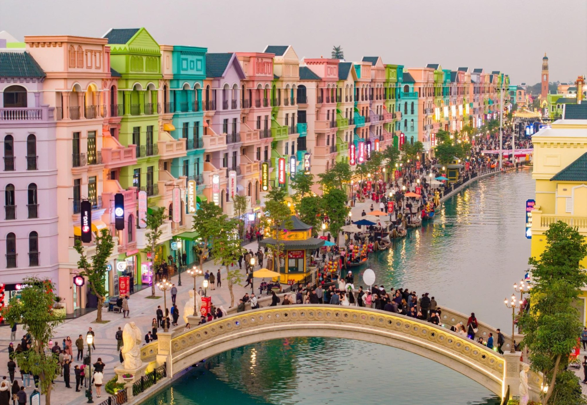

Khám Phá Viên Ngọc Sông Hồng: Hưng Yên
Nằm ở trung tâm đồng bằng Bắc Bộ, Hưng Yên không chỉ ôm trọn bề dày lịch sử ngàn năm mà còn đang vươn mình với những khu đô thị sinh thái xanh mát và hiện đại bậc nhất.

1. Dấu ấn Lịch sử & Văn hóa
Nhắc đến Hưng Yên là nhắc đến khu di tích Phố Hiến. Từng là thương cảng sầm uất bậc nhất thế kỷ 16-17, nơi đây lưu giữ quần thể kiến trúc cổ kính với đền Mẫu, chùa Chuông, và văn miếu Xích Đằng.
Tìm hiểu thêm về Lịch sử Phố Hiến tại đây.
2. Tọa độ vui chơi & Sống ảo (Khu vực Văn Giang)
Không cần đi đâu xa, ngay tại cửa ngõ Hưng Yên giáp Hà Nội là những tổ hợp vui chơi giải trí cực hot:
- Ecopark: Thành phố triệu cây xanh với công viên Hồ Thiên Nga, lý tưởng để cắm trại cuối tuần.
- Mega Grand World: Khu phố mang đậm phong cách Ý với dòng sông Venice thơ mộng và các show diễn thực cảnh hoành tráng.
- Làng hoa Xuân Quan & Làng gốm Bát Tràng: Địa điểm check-in và mua sắm cây cảnh, đồ thủ công tuyệt đẹp.
3. Tinh hoa Ẩm thực Hưng Yên
Hưng Yên là vùng đất của những sản vật tiến vua:
- Nhãn lồng: Quả to, cùi dày, hạt nhỏ, ngọt lịm.
- Gà Đông Tảo: Giống gà quý với đôi chân to khổng lồ, thịt chắc và thơm.
- Bánh tẻ : Món bánh ngon, nhân thịt mộc nhĩ thơm , ăn nóng chấm tương ớt cực bắt.
- Tương Bần: Nước chấm quốc dân, linh hồn của các món luộc.
4. Thông tin tổng quan
| Đặc điểm |
Thông tin |
| Vị trí |
Trung tâm đồng bằng sông Hồng |
| Diện tích |
Khoảng 930 km² |
| Biển số xe |
89 |